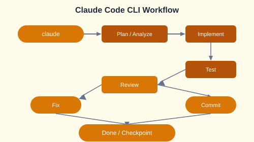

Claude Code is Anthropic's agentic CLI tool. It operates in your terminal with full file system access, git integration, and the ability to run commands.
# Installation
npm install -g @anthropic-ai/claude-code
# Start a session
claude
# Or pipe a prompt directly
echo "Explain this codebase" | claude -p
| Command | Description |
|---|---|
/plan | Generate a plan before writing code |
/review | Review recent changes |
/checkpoint | Save a session checkpoint |
--yolo | Autonomous mode  run commands without approval |
# Using checkpoints
claude --checkpoint save "pre-refactor"
# ... make changes ...
claude --checkpoint load "pre-refactor" # Rollback if neededModel Context Protocol (MCP) servers extend Claude's capabilities with custom tools.
// MCP server configuration in claude.json
{
"mcpServers": {
"jira": {
"command": "node",
"args": ["mcp-jira-server.js"],
"env": { "JIRA_TOKEN": "${JIRA_TOKEN}" }
},
"github": {
"command": "node",
"args": ["mcp-github-server.js"]
}
}
}Build a legal document generator SaaS with:
claude.md project context file# claude.md  Project context file
# Project: LegalDoc Generator
# Stack: FastAPI, PostgreSQL, Jinja2 templates
# Conventions: Black formatting, pytest, async views
# Key files: /app/main.py, /app/models/, /app/templates/claude.md context file. Build a small SaaS feature end-to-end: create a Jira ticket from Claude, implement the feature, open a PR, and review the PR  all from the CLI.